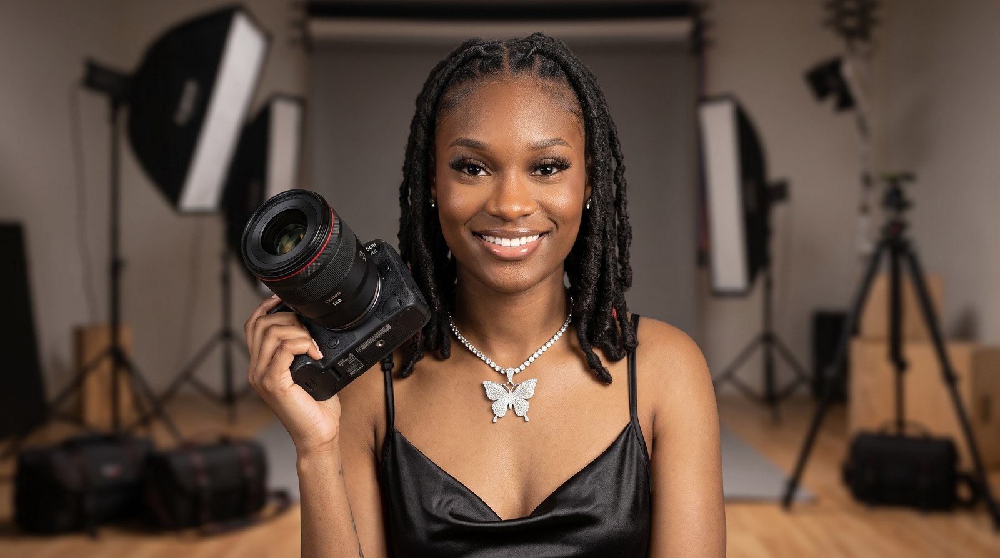

Hi, I'm Shay
The eye behind Beyond the Game & T&D Sports Video Productions
I started Beyond the Game because I wanted young athletes to have access to the same quality of photography and video that college and pro players get. Every kid on that field, court, or track deserves a highlight reel that actually looks like one.
Whether I'm on the sideline at a Friday night football game, courtside for a tournament, or setting up senior photos before the season starts, my goal is always the same: bring a professional eye and real energy to every shot, without losing what makes youth sports fun in the first place.
When I'm not behind the camera, I'm usually editing the next batch of highlights, scouting a new spot for photos, or cheering just as loud as the parents in the stands.
“Every athlete has a moment worth capturing — my job is to be ready for it.”
Want to work together?
Reach out and let's talk about getting your athlete noticed.
Get in Touch